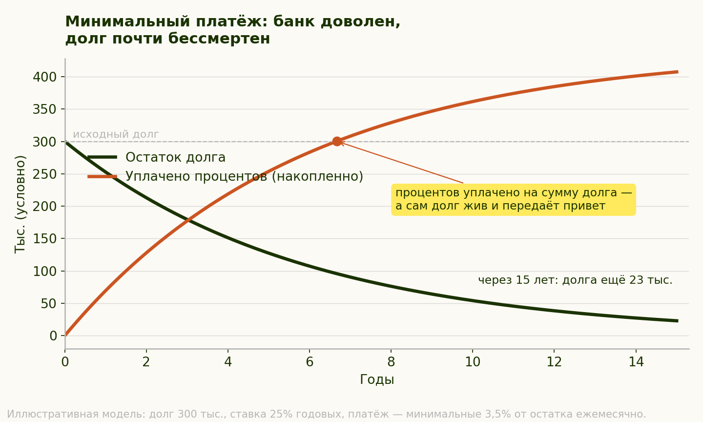
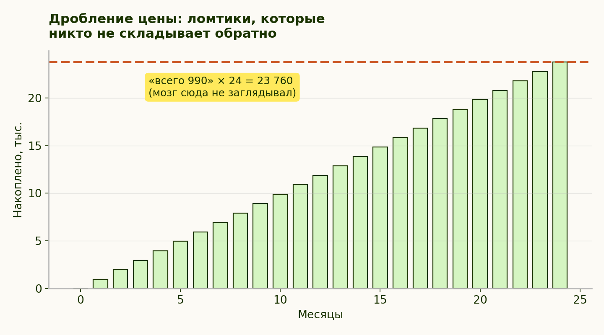

ЧАСТЬ III. ЭКОНОМИКА ОБЫЧНОЙ ЖИЗНИ
Модуль 6. Финансы: экономика недостаточности
Глава 10 из 14 · 24 мин чтения
Этот модуль — про деньги целиком: почему жильё стало недосягаемым и при чём тут поколения, как устроены кредит и рассрочка, что делать с уже набранным долгом, как жить по доходам без аскезы, чем кончаются быстрые деньги и сколько счастья на деньги вообще покупается.
Порядок такой: сначала условия, потом механика долга, потом выход, потом повседневные траты, потом обещания быстрого обогащения — и в конце честный разговор о том, что деньги решают, а что нет. Денежные установки, которые достались от семьи («запас карман не тянет», «деньги — зло», «стабильность любой ценой»), разобраны отдельно — в поколенческой памяти модуля 1: там их происхождение, здесь их механика.
Черта модуля. Это не финансовые советы и не персональные рекомендации: ни одна цифра здесь не рассчитана под твою ситуацию. Всё, что модуль делает, — показывает устройство инструментов и предлагает вопросы к ним. Решения о конкретном долге, ставке и договоре принимаются с их условиями на руках, а при необходимости — со специалистом.
Идея
До сих пор мы разбирали давление культуры. Экономические условия различаются между странами, периодами и когортами; и к одной границе между «нынешним» и родительским поколением не сводятся. Доступность жилья зависит, среди прочего, от соотношения цен и доходов, ставок и места; эти условия могут объяснять часть трудности, но не дают диагноза отдельной покупке и не отменяют личных факторов.
Часть 1. Почему квартира стала недосягаемой: смена условий, а не поколение лентяев
Совет «просто меньше кофе навынос» тут работает примерно как совет вычерпать море кружкой: технически действие происходит, стратегически море не в курсе.
Доступность жилья. Доступность жилья нужно сравнивать по конкретной стране, периоду и показателю; без них числовая кривая вводит в заблуждение.
Разные условия под одним названием. Спор «раньше умели работать, а сейчас нет» держится на молчаливом допущении, что экономика была та же самая, а изменились только люди. Допущение стоит проверить: соотношение цены жилья и дохода, доступность кредита, стабильность занятости, инфляция, требования к образованию и то, сколько лет уходит на вход в профессию, — всё это в разных поколениях складывалось по-разному, и не всегда в одну сторону. Сравнивать имеет смысл конкретную страну и конкретный период, а не «раньше» и «сейчас» вообще.
Практический вред от этого допущения — не в исторической неточности, а в выводе, который из него делают. Если условия те же, то отставание объясняется только усилием, и дальше следует знакомая конструкция: работай больше, соглашайся на меньшее, потерпи ради перспектив, которые почему-то не описаны ни числом, ни сроком. Это то же долженствование из модуля 1, только выданное от лица экономики. Ответ курса тот же, что и везде: прежде чем принимать вину за отставание, стоит выяснить, от чего именно отстаёшь и кто нарисовал это табло.
Первый вывод модуля: Сравнение с родительской траекторией нужно делать только после проверки страны, периода, цен, доходов и условий кредита; различия возможны, но не одинаковы везде.
Часть 2. Кредитная кабала: механика и психология
В этой главе кредит рассматривается как инструмент; риск «кабалы» зависит от ставки, платежа, дохода и условий договора, а не от недоказанной конструкции под универсальные слабости психики. Разберём шестерёнки.
Механика:
- Минимальный платёж. При минимальном платеже доля процентов и скорость снижения долга зависят от ставки и формулы платежа; в раскрытом примере основной долг уменьшается медленно, но не «почти не меняется».

B₀=300 000; r=0,25/12; Jₘ=rBₘ₋₁; Mₘ=0,035Bₘ₋₁; Bₘ=Bₘ₋₁+Jₘ−Mₘ; база — остаток на начало месяца; 180 месяцев; без покупок, комиссий, штрафов и минимального фиксированного платежа. На 80-м месяце накопленные проценты впервые превышают исходные 300 000: 300 282,56; после платежа остаётся 95 807,86 долга. Через 15 лет: остаток 23 001,23; проценты 407 351,14; платежи 684 349,91.
- Сложный процент против тебя. Проценты капитализируются только если договор и платёж оставляют их в балансе; долг не растёт «сам» при любом графике.
- Рефинансирование как петля. Меньший ежемесячный платёж при рефинансировании может оказаться результатом более долгого срока; сравнивать нужно ставку, срок, комиссии и общую сумму, а не платёж отдельно.
Психология, на которую всё рассчитано:
- Скидка на будущее. Отложенный первый платёж работает не на арифметику, а на восприятие: одна и та же сумма ощущается тем меньше, чем дальше она отодвинута. Это Обесценивание отдалённых последствий в пользу ближайших: одна и та же сумма ощущается тем меньше, чем дальше она отодвинута.. Отсюда и «будущий я разберётся»: будущему себе достаётся счёт, а нынешнему — покупка.
- Обезболивание оплаты. В некоторых исследованиях безналичная оплата сопровождается меньшей заметностью затрат или иными реакциями, чем наличные; эффект зависит от способа оплаты, человека и ситуации. Менее заметная оплата иногда связана с большими расходами, но правило «чем незаметнее, тем больше» не работает универсально. Исследования находят различия в реакции на способы оплаты, но не показывают, что именно этот эффект был намеренно положен в основу дизайна бесшовных покупок.
- Гиперболическое дисконтирование. Здесь нельзя опираться на отчёт FTC для оценки силы гиперболического дисконтирования: он документирует скрытые сборы и другие паттерны, но не измеряет, насколько человек переоценивает «сейчас».
- Первое названное число задаёт точку отсчёта для всех последующих оценок; дальше сделка сравнивается с ним, а не с полной суммой.. «990» становится якорем — поэтому ценник почти никогда не начинается с итога — итог показывают последним, если показывают.
- Дробление цены. Дробление цены на платежи может сделать полную сумму менее заметной; это не означает, что ощущение большой траты не возникает у всех. Складывать ломтики обратно приходится вручную.

990 × 24 = 23 760; до подписания проверьте комиссии и проценты. Это арифметика иллюстрации; в ней комиссии и проценты не заданы.
Часть 3. План выхода: погашение и профилактика
Дисклеймер честности: это образовательная рамка, а не индивидуальная финансовая консультация — конкретные решения зависят от твоих ставок, сумм и условий.
Шаг 1. Полная опись долга. Как в модуле 2 — факты без оценок: каждый кредит, остаток, ставка, минимальный платёж, срок. На одном листе.
Шаг 2. Стоп новым долгам. Прежде чем гасить долг, нужно перекрыть приток: убрать сохранённые карты из профилей магазинов, отключить «покупки в один клик», ввести правило 72 часов для незапланированных покупок, а для крупных решений — «переспать дважды».
Шаг 3. Выбор стратегии погашения. Две рабочие:
- Лавина: направлять выплаты сверх минимума сначала на долг с самой высокой ставкой.
- Снежный ком: гасить сначала самый маленький долг.
«Лавина» и «снежный ком» расставляют долги в разном порядке: первая — по ставке, второй — по размеру остатка. Называть это чистым выбором между экономией и устойчивостью привычки нельзя. Если лавину раньше не удавалось выдержать, можно рассмотреть снежный ком.
Шаг 4. Профилактика рецидива. Подушка — это кредит, который ты выдал себе сам под ноль процентов.
Часть 4. Жить по доходам: сокращение расходов без аскезы
Задача — не героическая экономия, а перестройка по принципам курса:
- Инвентаризация трат (модуль 2). Месяц просто записывать всё, без сокращений. Не оценивать — увидеть.
- Разделить траты на три списка: «жизнеобеспечение», «настоящая радость», «статус и анестезия». Резать только третий. Это сознательное использование Привычка психики делить деньги на «карманы» и тратить из них по-разному, хотя деньги одинаковые: премия и зарплата ощущаются разными деньгами, и премия «сгорает» легче. — обычно он работает против тебя, здесь используется в свою пользу.
- Правило «достаточно» для расходов (модуль 3). У каждой категории — своё число «мне хватает». Не минимум выживания, а честная достаточность. Жить по доходам — это жить по своим числам, а не по чужим витринам.
- Автоматизация вместо силы воли. Автоперевод в день дохода — один из способов откладывать регулярно; и, по-моему, самый надёжный: остаток имеет свойство не оставаться. На расходы остаётся остальное. Если откладывать только остаток, в некоторые месяцы его может не быть; это риск порядка операций, а не сравнительно доказанное поражение стратегии.
- Аудит подписок и «мелочей». Для ежемесячной подписки умножь платёж на 12, чтобы увидеть годовую сумму; это арифметическое сравнение, а не обещание изменить оценку покупки.
- Проверка статусной траты одним вопросом. «Встречают по одёжке» — правило среды, где о человеке нельзя было узнать больше ничего. Сейчас проверить его дороже, чем впечатлить: репутация, работы, отзывы и то, что человек реально умеет делать, выясняются быстрее, чем окупается покупка. Отсюда рабочий вопрос к статусной трате: она покупает мне доступ, который я иначе не получу, — или ощущение доступа? Первое иногда стоит денег. Второе стоит их всегда и не заканчивается, потому что ощущение требует повторной покупки. Навык, в отличие от вещи, не устаревает к следующему сезону и не требует ежегодного обновления модели.
Самая дорогая статусная статья при этом обычно не одёжка, а внешность целиком: как под неё производится дефект и почему счёт не закрывается покупкой — на странице «Красота». Здесь достаточно заметить, что третий список расходов у большинства начинается именно там.
Часть 5. Быстрые деньги: две истории с одинаковым концом
У экономической части есть отдельный этаж, на который заходят те, кому предыдущие четыре показались слишком медленными. Здесь продают не товар, а сокращение пути. Разберём две самые популярные версии — они устроены по-разному, но заканчиваются одинаково: с рулём в чужих руках.
История первая: криптовалюты. Начиналось всё как техническая критика: биткоин задумывался как расчётная система без посредников — ответ на финансовые институты, которым предлагалось перестать быть обязательными. Идея интересная и вполне в духе нашего курса: усомниться в том, что подано как безальтернативное. Дальше произошло то, что происходит с любой идеей, которую можно перепродать. Массовое употребление криптовалют сместилось от «расчёты без банков» к «купить дешевле, продать дороже», и разговор о них ведётся сегодня в основном курсом к доллару, а не удобством платежа. То, что начиналось как способ обойти менял, во многом стало новым видом менял — только вместо будки у метро приложение с графиком.
Для курса важна не судьба технологии, а то, что делает спекуляция с человеком. Механика знакома по разделу о гэмблинге: короткий цикл, яркая обратная связь, истории выигравших на виду и истории проигравших вне кадра — та самая ошибка выжившего из модуля 1, только с графиком курса. Плюс отдельный эффект, ради которого этот абзац и написан: криптоуспех переописывает удачу как компетентность. Человек, вошедший в удачный момент, и человек, вошедший в неудачный, отличаются в первую очередь моментом входа — но в ленте это подаётся как разница в уме, дисциплине и «насмотренности». Отсюда стандартный вывод индустрии недостаточности: раз он смог, а ты нет, дело в тебе. Знакомая подмена (см. «Справедливости нет»): исход, в котором велика доля случайности, засчитывается как оценка личности.
История вторая: собственный бизнес. «Открой своё дело» продаётся как выход из всех проблем сразу: свобода вместо начальника, доход без потолка, жизнь по своему расписанию. Первое иногда правда. Остальное — как повезёт, и повезёт не всем: по данным Бюро статистики труда США, до пятого года доживает меньше половины новых предприятий, а в отдельных отраслях — заметно меньше. Это не аргумент против предпринимательства: это аргумент против того, чтобы считать его спасением. Своё дело — не отмена рисков, а обмен одного набора рисков на другой, где ответственность за выручку, зарплаты и обязательства теперь твоя целиком, включая те месяцы, когда выручки нет.
Заметь ещё, кто громче всех рассказывает про предпринимательство как образ жизни: заметнее прочих обычно те, кто продаёт обучение делу, а не занят самим делом. Это наблюдение, а не измеренная доля рынка, — но проверяется оно в один вопрос.
И проверить рассказчика есть чем: фильтр «человек ошибающийся» из модуля 1 работает здесь по прямому назначению. Спроси, на чём человек зарабатывает — на деле или на обучении делу, — и попроси назвать провал конкретно, с суммой и сроком. Ответ на второй вопрос обычно закрывает тему быстрее первого. Помимо продавцов курсов — это те, кому нужен заёмщик: кредит на открытие, кредит на оборудование, кредит на кассовый разрыв, овердрафт. Кредитование малого бизнеса — отдельный банковский продукт со своим планом продаж, и энтузиазм по поводу «дела своей жизни» на этом рынке распределён неравномерно. Из этого не следует, что бизнес — ловушка; следует ровно то же, что и во всём курсе: спроси, кто говорит и что продаёт, и посмотри на условия до того, как подпишешь.
И общий знаменатель обеих историй. Быстрые деньги продаются не как деньги, а как выход из недостаточности: заработаю — и вопрос «достаточен ли я» закроется сам. Он не закрывается, мы это разбирали в модуле 3: у «лучше» нет числа, и сумма на счету не превращается в ощущение, что тебе хватает. Ощущение делается отдельно и другими средствами — теми, что в модулях 2–5.
Часть 6. Работа и призвание: карьера как сдвигающаяся планка
Деньги приходят с работы, а работа продаётся отдельно — и продаётся тем же способом, что всё остальное в этом курсе.
«Найди дело жизни». Обещание звучит освобождающе, а работает как планка: пока не найдено — ты занимаешься чем-то не тем, то есть по умолчанию недостаточен. Заметь, что у этого поиска, как и у «лучшей версии», нет критерия завершения: нашедший призвание должен ещё убедиться, что нашёл настоящее. Правдоподобнее выглядит скучная альтернатива: интерес чаще вырастает из умения и из того, что получается, а не предшествует им; работа может стать своей по мере того, как ты становишься в ней хорош. Это не значит, что менять занятие бессмысленно, — значит, что ожидание озарения не обязательное условие.
Карьерная лестница как сдвигающаяся планка. Механика знакома по модулю 1: закрытая ступень не приносит покоя, потому что немедленно появляется следующая. Разница только в том, что здесь планку двигает не лента, а отраслевая норма и сравнение с коллегами — и потому она выглядит объективной. Проверка та же: «выше» — это сколько? Если у ответа нет числа и срока, перед тобой не цель, а направление, по которому можно идти бесконечно.
Личный бренд. Последний этаж: теперь недостаточно работать, нужно ещё показывать, что работаешь. Публичная отчётность превращает ремесло в проект по самоулучшению с внешним аудитом — со всеми последствиями из части I, включая сравнение своего закулисья с чужими витринами. Отдельная ловушка в том, что заметность и качество работы — разные величины, и рынок внимания вознаграждает первую.
Что этому противопоставить — уже есть в курсе. «Достаточно» из модуля 3 применяется к работе так же, как к деньгам: назови, сколько дохода, часов и признания тебе хватает, и проверь, не пройдена ли точка. Право на плато из модуля 4 применяется к карьере буквально: стабильно делать работу хорошо годами — это владение, а не застой, просто оно не фотогенично. А вопрос «кто это говорит и что продаёт» работает и здесь: у большинства призывов «расти или уходи» есть заинтересованная сторона, и это редко ты.
Честная черта. Раздел не советует не расти и не менять работу. Он предлагает отделить рост, который ты выбрал, от роста, которого от тебя ждут, — и не путать усталость от второго с неспособностью к первому.
Дополнение к практике недели:
- Своё «достаточно» для работы. Назови три числа: доход, часы и то, сколько признания тебе хватает. Проверь каждое — может, точка уже пройдена.
- Аудит источника «надо расти». Ближайшее «пора двигаться дальше» разбери по схеме: кто это сказал и что он с этого получает?
- Список владений на работе. Три вещи, которые ты делаешь стабильно хорошо годами. Без «да это все умеют».
Эффект невозвратных затрат: почему трудно выйти из плохого
Отдельным пунктом — ловушка, которая держит людей в проигрышных сделках, ненужных подписках, тухлых проектах и, если честно, не только в них.
Суть. Уже потраченное — деньги, годы, силы — не возвращается ни при каком решении. Логика говорит, что решать надо, глядя вперёд: стоит ли продолжать, если начинать заново сегодня я бы не стал? Но чем больше вложено, тем труднее выйти. Эффект описан в психологии решений (классические эксперименты Аркеса и Блумера, 1985) и объясняется в том числе нежеланием выглядеть — прежде всего в собственных глазах — человеком, потратившим всё это зря. Оговорка, обязательная в этом курсе: часть классических сценариев этого эффекта в новых работах воспроизводится хуже, чем хотелось бы, так что относиться к нему стоит как к узнаваемой закономерности, а не как к закону природы.
Под ним лежит более общая асимметрия — Потеря переживается заметнее, чем выигрыш того же размера. Величина асимметрии в исследованиях обсуждается и не одинакова во всех задачах, но направление устойчиво.. Поэтому «признать потраченное потерянным» стоит дороже, чем продолжать: выходить больно, продолжать привычно.
Как он звучит изнутри. «Я столько в это вложил», «поздно бросать», «сейчас выйти — значит признать, что три года псу под хвост». Обрати внимание на грамматику: ни в одной из этих фраз нет будущего. Все они про прошлое, а решение принимается про будущее.
Рабочий вопрос — один. Если бы я оказался в этой точке сегодня, без всей предыстории, — выбрал бы я это сейчас? Если нет, то потраченное уже потрачено, и продолжение просто добавляет к нему новое. Это не призыв бросать всё подряд: у продолжения бывают отличные причины — она мне дорога, мне нравится процесс, впереди виден результат. Плохая причина ровно одна: «жалко потраченного».
И самая будничная версия — не в финале, а в косметологии: курс из десяти процедур оплачивается вперёд, результат обещан к концу, и на третьей выйти уже дорого. Форма продажи встроила механизм внутрь себя. Разобрано в «Красоте и внешности».
И да, у этого эффекта есть версия, не связанная с деньгами. Ей мы отвели отдельную главу в финале — она называется амнистией, и там речь о самой дорогой невозвратной затрате: о годах, за которые человек продолжает выставлять себе счёт.
Почему это ценно
Этот модуль отвязывает самооценку от кошелька в обе стороны. Невозможность купить квартиру перестаёт быть личным приговором: это ещё и смена эпохи. Долги перестают быть моральным клеймом: кредитная конструкция рассчитана на общечеловеческие механизмы психики, и попадание в неё не делает тебя глупым.
Одновременно модуль возвращает управление: у долга появляется опись и план, у расходов — свои числа. Тревога живёт в тумане; план этот туман разгоняет.
И отдельно — про «плакать лучше в мерседесе». Поговорка честная ровно наполовину, и именно поэтому живучая. Деньги действительно снимают целый класс страданий: они закрывают вопрос лечения, аренды, долга, безопасности, они дают выбор и время — это не мелочь, и курс нигде не предлагает от них отказаться. Но у неё есть вторая половина, которую пословица проглатывает: само переживание не масштабируется ценой салона. Тревога в три часа ночи, потеря близкого, ощущение бессмысленности вторника, стыд за прожитое — переживаются примерно одинаково в однушке на окраине и в дорогой машине, потому что происходят не в машине.
Первый пункт этого перечня разобран в «Горе» — в том числе индустрия, которая продаёт утрату по прейскуранту, составленному в расчёте на сутки без сравнения цен.
Практический вывод не «деньги не важны», а точнее: деньги хорошо решают то, что решается деньгами, и не решают то, что не решается. Путаница между двумя списками стоит дорого — и в прямом смысле тоже, потому что человек, пытающийся купить второе на деньги, предназначенные для первого, обычно получает и долг, и исходное переживание. Различение простое: если тебе плохо и понятно, какая покупка это чинит, — это первый список. Если тебе плохо и покупка выбирается по ощущению «должно помочь» — это второй, и там помогает другое, из модулей 2–5.
Деньги и счастье: что честно говорят данные
Финальный вопрос экономической части — главный: а сколько счастья вообще покупается за деньги? Данные тут есть, и они интереснее лозунгов с обеих сторон.
Что известно достоверно. Недостаток дохода для еды, жилья, лечения и безопасности связан с более низким благополучием; речь именно о связи, а не о том, что бедность у всех и всегда всё разрушает. Связь дохода с благополучием в среднем положительная и часто нелинейная, но единого порога «базовые потребности закрыты — связь резко ослабла» нет. Дополнительный доход нередко имеет убывающую связь с благополучием, хотя обещать, что «каждый следующий миллион радует меньше», данные не позволяют.
В объединённой регрессионной модели «Всемирного доклада о счастье» (World Happiness Report) за 2005–2025 годы логарифм ВВП на душу населения положительно связан с оценкой жизни по лестнице Кантрила: коэффициент 0,297 (стандартная ошибка 0,067), 155 стран и 2 365 наблюдений «страна — год», с учётом других переменных. Это статистическая связь, а не причинный эффект. В докладе доход остаётся положительно связан с оценкой жизни; эта модель не задаёт отдельную малую долю для «обеспеченного мира». В модели доклада наряду с логарифмом ВВП учитываются социальная поддержка, ожидаемая продолжительность здоровой жизни, свобода выбора, щедрость и восприятие коррупции; коэффициенты показывают статистические связи и не позволяют причинно распределить «оставшуюся разницу».
Самое интересное — страны-исключения. В объединённой модели доклада коэффициент для Латинской Америки и Карибского бассейна составляет +0,50 (t = 5,2) после учёта шести переменных. Это региональное остаточное отклонение модели, а не устойчивый причинный «избыток счастья». В докладе за 2026 год Коста-Рика занимает 4-е место по оценке жизни. В докладе за 2026 год Мексика занимает 12-е место по оценке жизни.
Доклад обсуждает социальные связи как возможную интерпретацию регионального остатка; это не причинное объяснение и не подтверждение роли «свободного выражения эмоций». Попробуй спросить себя, не мешает ли завышенное ожидание заметить обычный хороший день; это упражнение, а не объяснение региональной статистики.
В коста-риканском употреблении выражение pura vida буквально значит «чистая жизнь»; выражение служит приветствием, прощанием и возгласом благодарности или удовлетворения, а официальный туристический сайт описывает его и как образ жизни. Перевести можно и так: версия Pure, только по-испански и всей страной.
Что из этого следует — и что не следует. Не следует: «бедность — это хорошо» (см. пункт первый) и «переезжай в тропики» (счастье привозят не широты). Доход положительно связан с субъективным благополучием, нередко нелинейно; универсального порога, после которого деньги перестают что-либо значить, в данных нет.
Высокие позиции отдельных стран — наблюдение, из которого можно взять догадку, но не вывод о причинах. Крепкие социальные связи и доход оба связаны с удовлетворённостью жизнью; и турнира между ними никто не устраивал.
Дополнение к практике недели:
- Аудит двух отделов. Прикинь честно, сколько ресурса (времени, денег, сил) за последний месяц ушло в «отдел счёта» (заработать/сэкономить/статус) и сколько — в «отдел связей» (люди, здоровье, своё время). Пропорцию не осуждать — просто увидеть.
- Одна закупка в правильном отделе. На неделе потрать что-то — время или деньги — сознательно на связь: обед с родителями, вечер с другом, звонок без повода. Обещать, что это самая доходная инвестиция в жизни, я не стану, — но потрачено будет точно не зря.
Практика недели
- Опись долга и трат на одном листе, языком фактов из модуля 2.
- Три списка расходов («жизнеобеспечение / радость / статус и анестезия») и вычёркивание только из третьего.
- Правило 72 часов — на неделю применить ко всем незапланированным покупкам и записать, сколько желаний не дожило до третьего дня. Спойлер: смертность среди желаний — как у бабочек-однодневок, и это нормально, они так задуманы.
- Один автоперевод — настроить на день дохода; сумма может быть любой: важен порядок «сначала себе, потом остальным», а не размер перевода.
Тесты: как я обычно поступаю vs как я бы поступил с критическим мышлением
Формат простой. Ситуация — и две реакции: автопилот и критическое мышление. Честно отметь в каждой ситуации, какая реакция твоя. Это не экзамен.
1. Лента показала ровесника: дом, машина, «наконец-то сбылось» (модули 1, 2)
- 🔘 Автопилот: укол в груди → «а я что в жизни сделал» → полчаса доскролливания с ощущением собственной просроченности.
- 🔘 Критическое: «Лента показывает отобранные удачные эпизоды чужой жизни; и никакой доли „лучшие 5%“ никто не считал. Что осталось за кадром — кредит, годы, помощь родителей, удача? И главное: я хотел именно дом — или хочу перестать чувствовать этот укол?»
2. Реклама курса: «Освой профессию за 3 месяца и выйди на доход мечты» (модуль 1)
- 🔘 Автопилот: «Вот оно. Вот с понедельника новая жизнь» → покупка на эмоции → курс присоединяется к трём предыдущим на полке.
- 🔘 Критическое: «Кто мне это говорит и что он продаёт? Хотел ли я эту профессию вчера, до рекламы? Если реклама показывает только истории выпускников, попроси полную статистику; FTC не устанавливает типичные числа «три из трёх тысяч» для курсов.» (Привет, ошибка выжившего.)
3. «Всего 990 в месяц, первый платёж через 30 дней» (модуль 6)
- 🔘 Автопилот: «990 — это же ничего» → оформлено за 40 секунд → будущий я разберётся, он вообще молодец.
- 🔘 Критическое: «990 × 24 = 23 760. Произнесение полной суммы и сравнение с ценой за наличные — упражнение этой главы: оно делает условия рассрочки заметнее, но его эффект отдельно не проверен. Купил бы я это за 23 760 сразу, наличными из конверта? Если нет — почему нарезанное ломтиками стало съедобным?»
4. Внезапная премия (модули 3, 6)
- 🔘 Автопилот: «Я заслужил» → к вечеру премия конвертирована в вещи, о которых утром я не знал, что они мне нужны.
- 🔘 Критическое: «Деньги пришли — значит, у меня появился выбор, а не обязанность потратить. Что говорит мой список „достаточно“? Дыра в подушке закрыта? Радость, кстати, тоже легальная статья — но выбранная, а не рефлекторная».
5. Друг рассказывает, что не справляется и всё запустил (модуль 5)
- 🔘 Автопилот: «Да брось, всё у тебя нормально! Вот попробуй вставать в шесть…» → друг кивает и больше эту тему не поднимает.
- 🔘 Критическое: «Он не просил решение — он рискнул снять фасад. Моя задача не починить, а подтвердить, что так можно: „и у меня так бывает“. Совет — только если спросит».
6. Третий год без повышения, лента полна чужих карьерных скачков (модуль 4)
- 🔘 Автопилот: «Я застрял. Я деградирую. Все растут, один я стою» → вечер самокопания, ночь вакансий, к утру ничего, кроме тревоги.
- 🔘 Критическое: «Стою — или владею? Работу я делаю стабильно хорошо, на меня полагаются. Хочу ли я расти, потому что хочу, — или потому что стоять стыдно? Это два разных мотива, и решения из них выходят разные».
7. Вечер свободен. Внезапно — никаких дел (финал, версия Pure)
- 🔘 Автопилот: «Нельзя терять время» → подкаст на ×1,5 про продуктивность поверх мытья посуды, и почему-то усталость.
- 🔘 Критическое: «Кому я должен этот „полезный“ вечер? Ребёнок во мне знал, что вечер без цели — это не потерянное время, а просто вечер. Один час без „зачем“ — по расписанию версии Pure».
8. «Успей до конца дня! Осталось 2 места / 3 штуки / 4 часа» (модули 1, 6)
- 🔘 Автопилот: сердцебиение → «потом такого не будет» → покупка → таймер, как ни странно, назавтра снова там же.
- 🔘 Критическое: «Срочность — это инструмент отключения вот этого самого вопроса, который я сейчас задаю».
9. Утром в зеркале лицо не то, что вчера на фото (красота и внешность)
- 🔘 Автопилот: «Надо что-то делать» → час в поиске процедур и средств, вечер испорчен.
- 🔘 Критическое: «Зеркало и камера показывают разное, а снимок с расстояния вытянутой руки искажает черты геометрией объектива. Ни то ни другое не отчёт о том, каким меня видят».
10. У знакомого умер близкий; прошло полгода, а он всё ещё «не в порядке» (горе, утрата, конечность)
- 🔘 Автопилот: мысль «пора бы уже двигаться дальше» → аккуратный совет отвлечься.
- 🔘 Критическое: «У этого срока нет источника, кроме неудобства окружающих. Человек, которому сообщили, что пора перестать, обычно не перестаёт горевать — он перестаёт это показывать».
Как читать результат
Баллов здесь нет и шкалы тоже: десяти ситуаций слишком мало, чтобы что-то измерить, а любая «норма правильных ответов» была бы ровно той назначенной планкой, которую разбирает весь курс. Читается результат иначе — по составу, а не по количеству. У каждой ситуации в скобках стоит модуль, из которого она взята; посмотри, к каким модулям относятся ситуации, где ты честно отметил автопилот. Один-два повторившихся модуля и есть те, которые стоит перечитать первыми. Там, где реакция и так критическая, делать не нужно ничего — это можно просто засчитать себе, что в логике курса отдельное упражнение.
И последнее: цель — не жить в режиме вечной критической проверки (это тот же перфекционизм, только в профиль). Цель — один вставленный вопрос в моменты, когда кто-то очень хочет, чтобы ты не успел его задать.